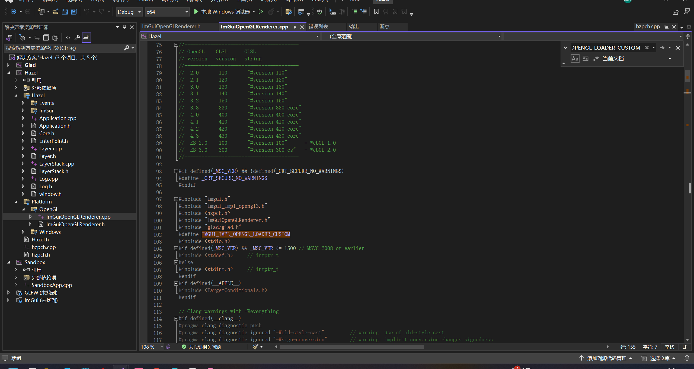
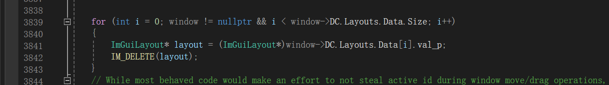
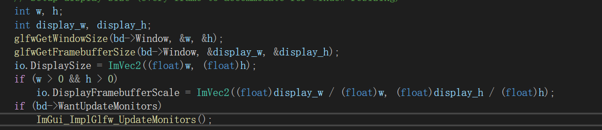

笔记9 imgui和imgui事件
再谈及imgui之前先说一说按照视频步骤拉取imgui的坑吧
由于版本问题，众所周知，肯定是不出意外的出意外的报错了。其实其实直接拿来用就好了，但是cherno既然是要举例子，就是暂时先把目前的教程的bug处理掉，bug也复现不出来（其实懒了，而且确实没必要，这里只是实例，后面会修改使用方法的）
主要就是imgui_opengl.cpp/.h文件引入的时候需要处理。
就是注意cpp文件中，开头这样写一下。
还有imgui.cpp中有一处需要修改，自己对照行数寻找，注意循环条件和window对象的修改。（这个最好记住，哪怕最新版本也注意一下）
（引入最新的imgui库好像有点问题需要修改，后面再补充上，而且前面跳过了glfw的imgui实现，而是自己去实现glfw的捕获功能，然后传递给imgui）
ImGui也是最为一个项目直接引入Hazel，premake里面都设置好了。
本质山imgui就是一个调试层，作为一个特殊的layer层级放置于覆盖层的上方。
我觉得在使用imgui之前我们可以先了解一下imgui的设计思路和布局等。
好吧先不管怎么样，我们先弄清楚imgui的结构和使用。
imgui的设计大体分为了俩个部分。
- 一个是核心的imgui的用户界面定义和用户交互的核心框架（包括imgui.h等等）
这里定义了用于创建按钮，文本，输入框等核心API，同时也有处理交互逻辑的处理等等。
为了实现跨平台的支持，作者将平台支持层，渲染支持层抽象出来，将各自的平台实现都放在backends（后端）文件夹中。
- 平台支持层（如
imgui_impl_glfw.cpp）：是 ImGui 与操作系统或窗口管理器的接口，用来获取输入事件、管理窗口等。不同平台的实现文件会负责在各自平台上获取输入事件，并将其传递给 ImGui 。
具体的以glfw为例子，glfw可以监听玩家的外设操作，然后将事件转换为对应的数据和事件标记，传递给imgui的IO对象，然后imgui接受操作，内部处理这些交互逻辑。
- 渲染支持层（如
imgui_impl_opengl.cpp）：这是 ImGui 与渲I染 API（如 OpenGL、DirectX、Vulkan）的接口，负责将 ImGui 的渲染数据转换为实际的绘制操作。后端渲染层将 UI 组件的绘制命令转换为图形 API 调用，以在屏幕上绘制出 ImGui 生成的界面。
完整的imgui使用需要指定你使用的平台层和渲染层，显然我们的项目使用的是glfw和openGL。
那么就需要使用imgui_impl_glfw.cpp，imgui_impl_glfw.h，imgui_impl_opengl.cpp，imgui_impl_opengl.h
可以参考官方文档（[wiki](imgui/docs/BACKENDS.md at master · ocornut/imgui)），同时我摘录一部分。
了解核心 Dear ImGui 库（根文件夹中的文件）和我们在此处描述的后端（backends/ 文件夹）之间的区别非常重要。
首先介绍了ImGui库
ImGui 具有高度的可移植性，只需要运行和渲染一些东西，通常：
必需：提供鼠标/键盘输入（馈送到
ImGuiIO结构中）。必需：将字体图集纹理上传到图形内存中。
必需：使用剪切矩形渲染索引纹理三角形。
可选：自定义纹理绑定支持。
可选：clipboard 支持。
可选：游戏手柄支持。
可选：鼠标光标形状支持。
可选：IME 支持。
可选：多视口支持。等。
然后介绍了backends中的文件
backends/ 文件夹包含流行平台/图形 API 的后端，您可以在应用程序或引擎中使用它们来轻松集成 Dear ImGui。每个后端通常自包含在一对文件中：imgui_impl_XXXX.cpp + imgui_impl_XXXX.h。
“平台”后端负责：鼠标/键盘/游戏手柄输入、光标形状、计时和窗口。e.g. Windows (imgui_impl_win32.cpp), GLFW (imgui_impl_glfw.cpp), SDL2 (imgui_impl_sdl2.cpp), etc.
‘Renderer’ 后端负责：创建图集纹理和渲染 imgui 绘制数据。e.g. DirectX11 (imgui_impl_dx11.cpp), OpenGL/WebGL (imgui_impl_opengl3.cpp), Vulkan (imgui_impl_vulkan.cpp), etc.
附上文档里面使用的glfw和openGL的使用例子。
----
//Add to Includes: 添加到包含：
#include "imgui.h"
#include "imgui_impl_glfw.h"
#include "imgui_impl_opengl3.h"
----
//Add to Initialization: 添加到初始化：
// Setup Dear ImGui context
IMGUI_CHECKVERSION();
ImGui::CreateContext();
ImGuiIO& io = ImGui::GetIO();
io.ConfigFlags |= ImGuiConfigFlags_NavEnableKeyboard; // Enable Keyboard Controls
io.ConfigFlags |= ImGuiConfigFlags_NavEnableGamepad; // Enable Gamepad Controls
io.ConfigFlags |= ImGuiConfigFlags_DockingEnable; // IF using Docking Branch
// Setup Platform/Renderer backends
ImGui_ImplGlfw_InitForOpenGL(YOUR_WINDOW, true); // Second param install_callback=true will install GLFW callbacks and chain to existing ones.
ImGui_ImplOpenGL3_Init();
----------
//Add to start of main loop:
//添加到 main 循环的开头：
// (Your code calls glfwPollEvents())
// ...
// Start the Dear ImGui frame
ImGui_ImplOpenGL3_NewFrame();
ImGui_ImplGlfw_NewFrame();
ImGui::NewFrame();
ImGui::ShowDemoWindow(); // Show demo window! :)
----------
//Add to end of main loop:
//添加到 main 循环的末尾：
// Rendering
// (Your code clears your framebuffer, renders your other stuff etc.)
ImGui::Render();
ImGui_ImplOpenGL3_RenderDrawData(ImGui::GetDrawData());
// (Your code calls glfwSwapBuffers() etc.)
-----------
//Add to Shutdown: 添加到关机：
ImGui_ImplOpenGL3_Shutdown();
ImGui_ImplGlfw_Shutdown();
ImGui::DestroyContext();
----------
在layer层的示例中，cherno将glfw层的作用层层拆分，融合到示例里面了。
暂且先解释以下imgui_glfw_cpp中实现的功能。
imgui_glfw_cpp文件中，我们可以参照上面的使用，参考几个主要功能
- 首先就是初始化
ImGui_ImplGlfw_InitForOpenGL(YOUR_WINDOW, true);
初始化 ImGui 后端数据，配置与平台相关的设置。
设置与剪贴板、鼠标光标、错误回调等相关的功能。
安装 GLFW 的回调函数以处理各种平台事件。
注册显示器和多视口支持。
处理 Emscripten 特有的回调（如果在该平台下运行）
在cherno的示例中我们需要的注意就以下几个功能
- 设置后端标志（
BackendFlags）：支持键盘输入，光标等。- 剪贴板是最后留给玩家的实现的作业。
- 安装回调函数，在示例中我们就在imguiLayer中直接像glfw的注册函数。
- 然后就是更新
ImGui_ImplGlfw_NewFrame();
- 获取 ImGuiIO 和后端数据
- 设置显示尺寸和比例（windowSize和frameBufferSize）
- 设置时间步长
- 更新鼠标数据和光标
- 更新游戏手柄（如果启用并可用）
首先解释一下明明回调函数中更新了对应的鼠标等设置，但是为什么要在这里统一更新，
搜索给的答案是:
事件本身并不保证在每一帧的开始时都能更新，因此，
ImGui_ImplGlfw_NewFrame()会在每帧开始时，从 GLFW 获取当前的输入数据，并将其统一更新到ImGuiIO中，确保 ImGui 正确地响应当前帧的所有输入。而根据我看的来说，虽然鼠标等回调直接可以根据回调改变，但是调节屏幕尺寸大小等等，都是先标记然后在new_frame中处理屏幕等需要统一处理的，至于原因，也不太清楚。
Cherno示例中使用的
- 设置显示尺寸和比例（windowSize和frameBufferSize是不同的概念，后面解释）
- 设置时间步长
- 最后就是关闭了
ImGui_ImplGlfw_Shutdown();
- 关闭平台接口
- 还原 GLFW 回调（如果需要）
- 销毁鼠标光标
- 清理平台后端数据
没啥印象，暂时不知道哪里用了。
至于opengL的功能，哈哈哈看我什么时候无聊搜搜看看补上吧
接下来我们就来看看，cherno编写示例中的步骤。
- 先将imgui_opengl3的文件引入修改为ImGuiOpenGLRenderer名字，对里面的文件引入稍加修改（至于修改方法明天再来解释）
- 然后就是参考example_glfw_opengl3的文件找到参考，编写imguiLayer中的代码。
- 例如初始化
OnAttach
void ImGuiLayer::OnAttach()
{
ImGui::CreateContext();
ImGui::StyleColorsDark();
ImGuiIO& io = ImGui::GetIO();
io.BackendFlags |=ImGuiBackendFlags_HasMouseCursors;//表明支持鼠标光标。
io.BackendFlags |= ImGuiBackendFlags_HasSetMousePos;//表明可以处理 io.WantSetMousePos 请求。
io.KeyMap[ImGuiKey_Tab] = GLFW_KEY_TAB;
io.KeyMap[ImGuiKey_LeftArrow] = GLFW_KEY_LEFT;
io.KeyMap[ImGuiKey_RightArrow] = GLFW_KEY_RIGHT;
//....省略映射
ImGui_ImplOpenGL3_Init("#version 410");
}
- 前俩个就是创建上下文，和设置背景色风格
- 然后就是支持设置（原本是imgui_glfw的初始化一部分）
- 这个映射其实没必要的，但是为了当时作为示例实现，直接设置了，实际上glfw监视映射的键码需要映射到ImGui的键码只需要一个函数就能实现源文件就是
ImGui_ImplGlfw_KeyToImGuiKey函数实现的，这里纯粹是为了响应自己写的event函数，利用event的GetKeyCode等返回的glfw键码，方便直接将输入直接反馈给imgui（然后imgui处理交互逻辑）
bool ImGuiLayer::OnKeyReleasedEvent(KeyReleasedEvent& e)
{
ImGuiIO& io = ImGui::GetIO();
io.KeysDown[e.GetKeyCode()] = false;
return false;
}
- 最后就是imgui_opengl的初始化。
- 设置imguiLayer的OnEvent事件
为此创建了一个专门处理文字输入的事件（KeyTypedEvent）,没想到还有这种事件，暂时还不太了解。
为当前层级创建事件分配器，为不同的事件注册对应的回调函数。
void ImGuiLayer::OnEvent(Event& event)
{
EventDispatcher dispatcher(event);
dispatcher.Dispatch<KeyTypedEvent>(HZ_BIND_EVENT_FN(ImGuiLayer::OnKeyTypedEvent));
//...
}
- 编写对应的回调函数，就展示一个（return false表示当前事件已被处理，不需要再往下传递）
这里面的回调函数，都直接把输入的操作传给imgui的IO中，简化了imgui_glfw中的处理相关设计，统一回调函数处理了。
bool ImGuiLayer::OnMouseButtonPressedEvent(MouseButtonPressedEvent& e)
{
ImGuiIO& io = ImGui::GetIO();
io.MouseDown[e.GetMouseButton()] = true;
return false;
}
- 设置imguiLayer的update
void ImGuiLayer::OnUpdate()
{
ImGuiIO& io = ImGui::GetIO();
Application& app=Application::Get(); //为此还专门为application创建了一个单例。
//设置windowSize
io.DisplaySize = ImVec2(app.GetWindow().GetWidth(),app.GetWindow().GetHeight());
//计算步长
float time = (float)glfwGetTime();
io.DeltaTime = m_Time > 0.0f ? (time - m_Time) : (1.0 / 60.0f);
m_Time = time;
//统一更新
ImGui_ImplOpenGL3_NewFrame();
ImGui::NewFrame();
//示例imgui展示
static bool show = true;
ImGui::ShowDemoWindow(&show);
//绘制，绘制数据
ImGui::Render();
ImGui_ImplOpenGL3_RenderDrawData(ImGui::GetDrawData());
}
前面俩步其实就是从imgui_glfw中拆分出来的。
第一步设置windowsize（其实第二步还有设置帧缓冲frameBufferSize）
他将帧缓冲的设置放在了屏幕Resize回调函数里面（OnWindowResizeEvent），这分的有点散。
bool ImGuiLayer::OnWindowResizeEvent(WindowResizeEvent& e)
{
ImGuiIO& io = ImGui::GetIO();
io.DisplaySize = ImVec2(e.GetWidth(), e.GetHeight());
io.DisplayFramebufferScale = ImVec2(1.0f, 1.0f);
glViewport(0, 0, e.GetWidth(), e.GetHeight());
return false;
}
视图（Viewport）是 OpenGL 中的一个矩形区域，用来指定渲染内容应该出现在窗口的什么位置和多大范围内。具体地说，当调用
glViewport(x, y, width, height)时，OpenGL 会将绘制的内容缩放并放置在该区域内，所有后续渲染操作的坐标都会被映射到这个区域内。换句话说，如果你设置
glViewport(e.GetWidth()/2,e.GetHeight()/2, e.GetWidth()/2, e.GetHeight()/2);那么所有绘制的都会浓缩在右上角1/4区域，就是参考的窗口绘制范围。
（貌似这里没啥用，openGL中Renderer会处理视口问题）
帧缓冲区（Framebuffer） 是一个内存区域，保存了每个像素的颜色信息。它通常包括图像的宽度、高度以及每个像素的颜色、深度等信息。在图形渲染过程中，GPU 会将图像渲染到帧缓冲区，渲染完成后，帧缓冲区的内容会被显示到屏幕上。
window size是指用户在屏幕上看到的窗口的实际显示尺寸，通常是窗口的逻辑尺寸，也就是窗口的宽度和高度，不考虑显示器的 DPI 缩放或其他显示因素。也就是说windowsize是逻辑直观上的大小，但是根据电脑显示屏分辨率的不同，需要对实际大小做出调整，分辨率更高的像素点更加密集，直观上的大小，需要更多的像素点，所以需要合理的缩放（DPI）。
在一个常规的 1920x1080 分辨率的显示器上，假设操作系统使用了 2x 的 DPI 缩放，那么帧缓冲区的尺寸可能是 1600x1200，而窗口大小（即显示的窗口尺寸）可能是 800x600。
第二步就是计算步长，时间差暂时也不考虑。
第三步就是明显的帧更新
第四步就是绘制了，关于第四步，imgui_Render其实是处理所有控件数据，然后生成绘图指令，最后openGL再处理这些数据绘制。